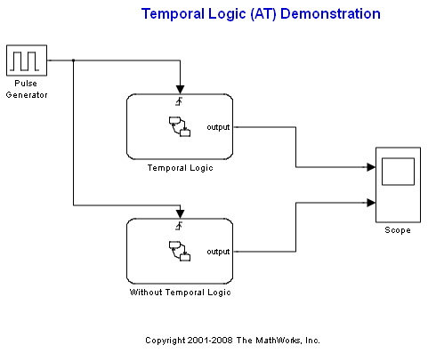
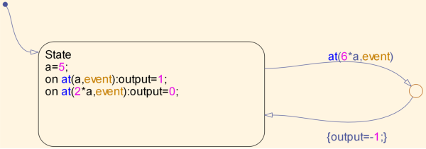
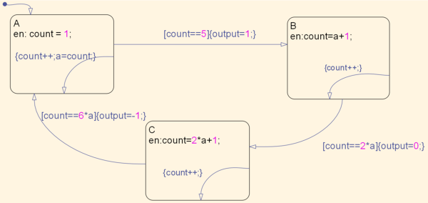

Temporal Logic Using the AT Function
In this demo, we illustrate the advantage of using the AT function. In this demo, the AT function is used three times in the 'Temporal Logic' chart.
Contents
After setting a value a=5, we use the AT function to change the final output in the chart. On the 5th ('a') event, we set the output to 1; on the 10th ('2*a') event, we set the output to 0; and finally, on the 30th ('6*a') event we set the output to equal -1.
Without Temporal Logic
In the 'Without Temporal Logic' chart, we need to use many more states and transitions to create the same model. We also needed to create an extra local variable, 'count', to be used as a counter for every occurrence. In general, there were many more definitions and declarations needed to create the same model without using temporal logic. This increases the chance for error as well as the size of the generated code.
